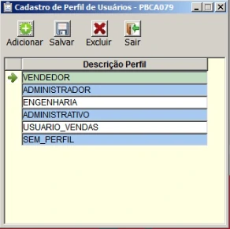
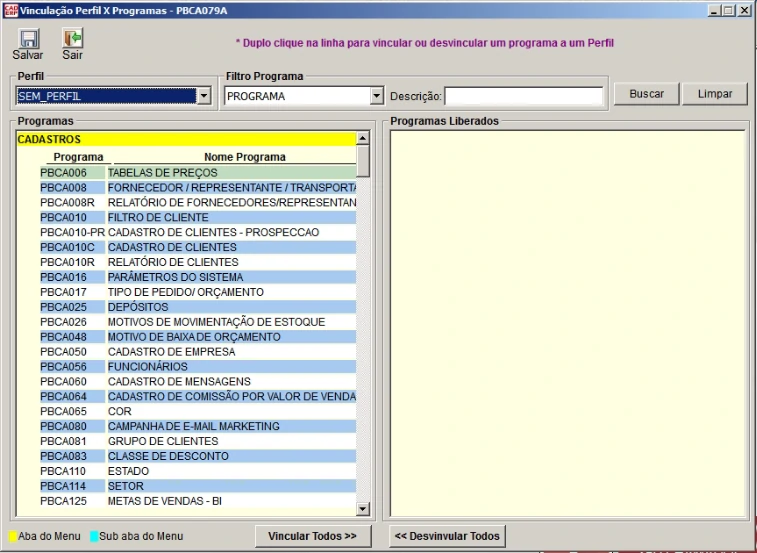
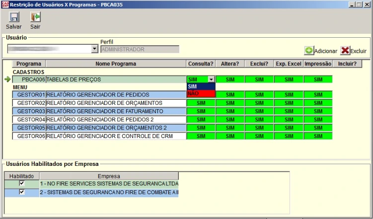
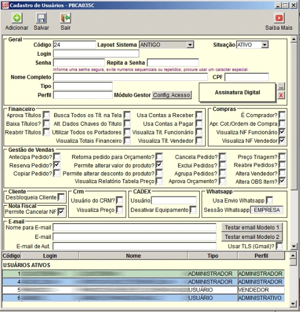
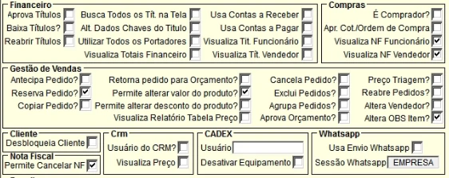
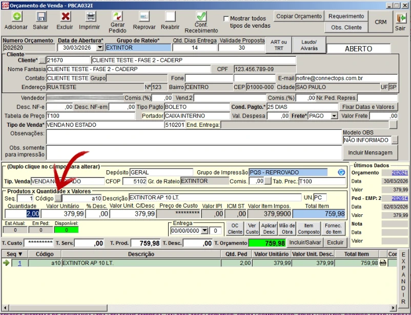
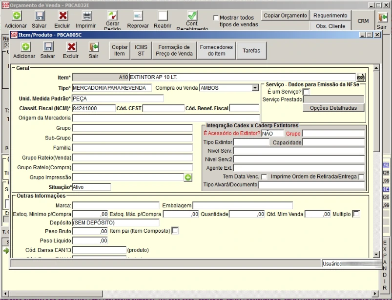

1. Objetivo do Bloco 02
O objetivo deste bloco é explicar como o controle de acessos do CAD ERP deve ser compreendido na prática. Antes de definir permissões, perfis ou responsabilidades, é necessário entender que o sistema possui diferentes camadas de controle, e que essas camadas não possuem o mesmo peso operacional.
A leitura superficial do sistema pode levar à impressão de que o acesso é controlado principalmente por perfis. Porém, a análise prática demonstrou que essa leitura é incompleta.
Na operação real da No Fire, o controle de acessos deverá considerar cinco elementos principais:
- PBCA079 — Cadastro de Perfil;
- PBCA079A — Vinculação Perfil x Programas;
- PBCA035 — Restrição de Usuário x Programa;
- PBCA035C — Cadastro de Usuário e permissões internas;
- Comportamentos não controlados tecnicamente — acessos indiretos, bypass ou telas abertas fora da lógica esperada.
A regra central deste bloco é: perfil organiza, mas não garante sozinho o controle real do ambiente.
2. Visão geral da arquitetura de acesso
A arquitetura de acesso identificada no CAD ERP pode ser entendida como uma sequência de camadas. Cada camada possui uma função diferente. Algumas organizam o acesso, outras liberam programas, outras restringem usuários, e outras refinam o que pode ser feito dentro de determinadas telas.
A estrutura geral deve ser compreendida da seguinte forma:
PBCA079 → PBCA079A → PBCA035 → PBCA035C → Governança operacional
Essa sequência não deve ser interpretada como uma garantia automática de segurança. Ela representa o caminho lógico de configuração e revisão que deverá ser adotado pela No Fire.
- PBCA079: cria ou organiza perfis;
- PBCA079A: vincula programas aos perfis;
- PBCA035: restringe ou valida acesso diretamente por usuário;
- PBCA035C: define campos e permissões internas do cadastro de usuário;
- Governança: cobre tudo aquilo que o sistema não controlar adequadamente.
O erro conceitual mais perigoso seria imaginar que a criação de um perfil resolve automaticamente todo o controle de acesso. Não resolve. O perfil é apenas uma parte da estrutura.
3. Tela PBCA079 — Cadastro de Perfil
A tela PBCA079 é utilizada para cadastrar e organizar perfis no sistema. O perfil funciona como uma identificação lógica de grupo. Ele permite separar usuários por função, área ou padrão operacional.
Exemplos de perfis funcionais que podem existir na organização:
- Administrador;
- Vendedor;
- Administrativo;
- Engenharia;
- RH;
- Gestão Comercial;
- Financeiro.
Porém, para fins de segurança operacional, o perfil não deve ser tratado como camada suficiente de proteção. Ele ajuda a organizar o ambiente, mas não elimina a necessidade de restrição direta e revisão manual.

Imagem: Tela - Cadastro de Perfil de Usuários - PBCA079
O PBCA079 deve ser usado como organização de perfis, não como garantia isolada de segurança.
4. O que o perfil faz — e o que ele não faz
4.1 O que o perfil faz
O perfil permite criar uma base lógica para agrupar usuários com funções semelhantes. Isso facilita a configuração, a leitura do ambiente e a replicação inicial de permissões.
Na prática, o perfil ajuda a responder perguntas como:
- este usuário pertence ao grupo comercial?
- este usuário pertence ao administrativo?
- este usuário pertence ao RH?
- este usuário deve ter uma base de programas semelhante a outro grupo?
4.2 O que o perfil não faz
O perfil não deve ser tratado como uma barreira absoluta. Ele não elimina a necessidade de revisar acessos reais, testar comportamento do usuário e aplicar restrições específicas.
Portanto, o perfil não deve ser usado como argumento único para dizer que determinado usuário está seguro ou corretamente limitado.
Perfil é organização. Controle real exige revisão adicional.
5. Tela PBCA079A — Vinculação Perfil x Programas
A tela PBCA079A é responsável por vincular programas a um perfil. É nela que se define a base inicial de programas que determinado perfil poderá acessar.
Essa tela é importante porque permite montar uma primeira camada de acesso por grupo. Por exemplo: um perfil de vendedor pode receber programas comerciais, enquanto um perfil administrativo pode receber programas financeiros e cadastrais.
Entretanto, a vinculação Perfil x Programas não deve ser interpretada como controle final. Ela define uma base, mas não substitui a revisão individual por usuário.

Imagem: Tela - Vinculação Perfil x Programas - PBCA079A
O PBCA079A cria a base de acesso. A validação final deve considerar usuário, função, risco e restrições específicas.
6. Como interpretar a vinculação de programas
Cada programa vinculado no PBCA079A representa uma tela, rotina ou funcionalidade que pode ser acessada dentro do CAD ERP. Esses programas normalmente são identificados por códigos como PBCA, PBRE, BI, PBCX, GESTOR ou QGPB.
Exemplos:
- PBCA032 — Orçamento de Venda;
- PBCA015 — Pedido de Venda;
- PBCA056 — Cadastro de Funcionários;
- PBCA035 — Cadastro de Usuários;
- PBCA079 — Cadastro de Perfil;
- PBCA079A — Vinculação Perfil x Programas;
- PBRE — relatórios operacionais;
- BI — relatórios analíticos;
- QGPB — rotinas específicas ou utilitárias.
A liberação de um programa deve ser analisada considerando sua função real. Nem todo programa é equivalente. Alguns são apenas consultivos, enquanto outros alteram dados estruturais, financeiros, fiscais ou comerciais.
Programa liberado não deve ser analisado apenas pelo nome. Deve ser analisado pelo impacto da ação que ele permite.
7. Tela PBCA035 — Restrição de Usuário x Programa
A tela PBCA035 é uma das mais importantes para a governança do ambiente. Ela permite tratar restrições diretamente por usuário, funcionando como uma camada de controle mais específica do que o perfil.
Enquanto o perfil organiza usuários em grupos, a restrição por usuário permite ajustar o acesso de forma individual. Isso é essencial porque usuários com o mesmo perfil podem ter responsabilidades diferentes, níveis de confiança diferentes ou necessidades operacionais diferentes.
Na prática, o PBCA035 deve ser tratado como a principal ferramenta de validação manual do acesso.

Imagem: Tela - Restrição de Usuário x Programa - PBCA035
O PBCA035 deve ser tratado como a principal camada de controle técnico disponível para ajuste individual de usuário.
8. Por que o PBCA035 é a camada mais importante
O PBCA035 é mais importante que o perfil porque atua diretamente sobre o usuário. Isso permite revisar e restringir permissões de maneira mais precisa.
Esse ponto é essencial para a No Fire porque o ambiente possui usuários com responsabilidades distintas, além de decisões operacionais que ampliam o uso de perfil administrador.
Com isso, a governança não pode depender apenas de uma regra genérica por perfil. É necessário validar usuário por usuário.
O PBCA035 deve ser utilizado para:
- bloquear acesso a programas críticos;
- restringir rotinas administrativas;
- controlar acesso a telas fiscais;
- limitar acesso a utilitários sensíveis;
- ajustar exceções específicas;
- validar se o usuário possui apenas o necessário para sua função;
- reforçar a matriz de permissões definida pela No Fire.
Todo usuário deve ser revisado individualmente. O perfil não substitui a validação no PBCA035.
9. Tela PBCA035C — Cadastro de Usuários e permissões internas
A tela PBCA035C é utilizada para cadastro de usuários e também contém campos e checkboxes relacionados a permissões internas.
Essa tela possui dois papéis diferentes:
- registrar dados cadastrais do usuário;
- controlar permissões específicas por meio de campos e checkboxes.
Essa diferença é fundamental. O fato de o RH poder atuar no cadastro básico de usuário não significa que o RH deva definir permissões internas, perfil, tipo ou autorizações sensíveis.

Imagem: Tela - Cadastro de Usuários - PBCA035C
PBCA035C não é apenas cadastro. Também contém permissões internas sensíveis.
10. Diferença entre PBCA035 e PBCA035C
Apesar dos nomes parecidos, PBCA035 e PBCA035C não devem ser confundidos.
| Tela | Função principal | Tipo de controle |
|---|---|---|
| PBCA035 | Restrição de Usuário x Programa | Controla acesso à tela/programa |
| PBCA035C | Cadastro de Usuários e permissões internas | Controla cadastro e ações internas por checkbox |
Em linguagem simples:
- PBCA035 define se o usuário deve ou não acessar determinado programa;
- PBCA035C define dados do usuário e permissões internas específicas.
PBCA035 controla acesso à tela. PBCA035C refina o que o usuário pode fazer em determinadas rotinas.
11. Checkboxes do PBCA035C
Os checkboxes do PBCA035C representam permissões específicas dentro de determinadas áreas do sistema. Eles podem controlar ações financeiras, comerciais, fiscais, operacionais ou de comunicação.
Exemplos de permissões internas identificadas:
- Aprovar títulos;
- Baixar títulos;
- Reabrir títulos;
- Alterar dados chave de título;
- Permitir alterar valor do produto;
- Permitir alterar desconto do produto;
- Cancelar pedido;
- Excluir pedido;
- Aprovar orçamento;
- Alterar vendedor;
- Desbloquear cliente;
- Cancelar nota fiscal;
- Usar envio por WhatsApp.
Esses checkboxes devem ser analisados com extremo cuidado, pois alguns deles autorizam ações de alto impacto.

Imagem: Tela - Checkboxes de Permissões Internas - PBCA035C
Checkbox marcado pode significar autorização para ação crítica. Não deve ser marcado por conveniência.
12. Limite dos checkboxes
Os checkboxes são importantes, mas não resolvem tudo.
Eles funcionam apenas quando a tela ou rotina está sujeita àquele tipo de controle interno. Nem todo programa possui refinamento por checkbox. Algumas telas são controladas apenas por acesso ao programa. Outras podem apresentar comportamento fora da lógica esperada de permissão.
Portanto, os checkboxes devem ser entendidos como uma camada de refinamento, não como garantia total de segurança.
- algumas permissões são controladas por checkbox;
- algumas telas são liberadas ou bloqueadas como um todo;
- algumas funções podem exigir controle por processo;
- alguns comportamentos podem depender de correção pela CAD;
- algumas situações exigem auditoria posterior.
Checkbox é refinamento. Não substitui matriz, restrição por usuário e governança.
13. Hierarquia prática de controle
Para fins operacionais, a No Fire deverá considerar a seguinte hierarquia prática:
- Comportamento real do sistema — aquilo que foi validado na prática;
- PBCA035 — restrição direta por usuário;
- PBCA035C — permissões internas por checkbox;
- PBCA079A — programas vinculados ao perfil;
- PBCA079 — cadastro e organização do perfil;
- Governança operacional — regra obrigatória para tudo que o sistema não controla adequadamente.
Essa hierarquia existe porque o comportamento observado em ambiente real deve prevalecer sobre a suposição de funcionamento ideal.
A configuração teórica nunca deve ser mais importante que o comportamento real validado no sistema.
14. Comportamentos fora da lógica esperada
Durante a análise do ambiente, foram identificados comportamentos em que telas ou rotinas puderam ser acessadas mesmo sem a liberação esperada.
Esses comportamentos podem ocorrer por diferentes motivos:
- atalhos internos do sistema;
- menus que não respeitam integralmente o perfil;
- chamadas indiretas a partir de outras telas;
- rotinas externas abertas fora do controle principal;
- falhas de bloqueio por perfil;
- funções sem restrição completa disponível.
Quando isso ocorrer, a No Fire não deve interpretar o acesso como autorização automática. A regra operacional continua valendo.

Imagem: Exemplo de Acesso Indireto - Tela Orçamento de Venda - PBCA032I

Imagem: Exemplo de Acesso Indireto - Tela de Cadastro de Itens/Produtos - PBCA005C
Se uma tela abrir indevidamente, isso não transforma o uso em permitido.
15. Controle técnico versus controle operacional
O controle técnico é aquilo que o sistema consegue impedir, liberar ou restringir por configuração.
O controle operacional é aquilo que a empresa define como regra de uso, independentemente de o sistema bloquear ou não.
No ambiente da No Fire, os dois controles precisam existir juntos.
| Tipo de controle | Exemplo | Responsável principal |
|---|---|---|
| Controle técnico | Restrição no PBCA035 | Gestão / Implantação |
| Controle técnico | Checkbox desmarcado no PBCA035C | Gestão / Implantação |
| Controle operacional | Regra proibindo uso de função mesmo que apareça na tela | Empresa / Gestão |
| Controle operacional | Comunicação obrigatória de alteração sensível | Usuário / Gestor |
Onde o controle técnico não for suficiente, o controle operacional passa a ser obrigatório.
16. Tipos de telas quanto ao controle
Para facilitar a governança, as telas do sistema devem ser classificadas em três grupos principais.
16.1 Telas governáveis
São telas em que o acesso pode ser controlado de forma mais consistente por perfil, vinculação, restrição ou checkbox.
Exemplos esperados:
- parte das rotinas financeiras;
- parte das rotinas comerciais;
- parte das rotinas de CRM;
- rotinas com checkboxes específicos no PBCA035C.
16.2 Telas parcialmente governáveis
São telas em que existe algum nível de controle, mas a proteção não deve ser considerada absoluta.
Nesses casos, a matriz deve ser aplicada, mas também deve haver revisão, orientação e acompanhamento.
16.3 Telas não governáveis apenas por configuração
São telas, rotinas ou acessos que podem exigir controle por processo, porque o bloqueio técnico pode não ser suficiente no cenário atual.
Para essas telas, a resposta correta não é confiar no sistema. A resposta correta é estabelecer regra, comunicação, limitação de uso e auditoria.
Nem todo risco será resolvido por configuração. Alguns riscos deverão ser administrados por processo.
17. Programas, telas e códigos PBCA
O CAD ERP identifica grande parte de suas telas e rotinas por códigos de programa. Esses códigos são essenciais para a matriz de permissões, porque permitem tratar acessos de forma objetiva.
Exemplos:
- PBCA035 — Cadastro de Usuários;
- PBCA079 — Cadastro de Perfil;
- PBCA079A — Vinculação Perfil x Programas;
- PBCA041 — Exportação de Dados;
- PBCA013 — Tributação;
- PBCA027 — Títulos;
- PBCA032 — Orçamento de Venda;
- PBCA015 — Pedido de Venda;
- PBCA056 — Funcionários.
O uso do código evita ambiguidade. Em vez de dizer apenas “tela de usuário” ou “tela financeira”, o manual deve sempre que possível indicar o programa correspondente.
Código PBCA é referência operacional. Ele reduz confusão na configuração, auditoria e comunicação com a CAD.
18. Como a No Fire deve interpretar uma tela aberta
Uma tela aberta deve ser interpretada com cautela.
O usuário deve considerar três perguntas antes de qualquer ação:
- Esta tela faz parte da minha função?
- Esta ação está prevista na matriz de permissões?
- Tenho orientação formal para executar esta operação?
Se a resposta for negativa ou incerta, a ação não deve ser executada.
Esse princípio será especialmente importante em rotinas críticas, como:
- cadastro de usuários;
- perfil e permissões;
- tributação;
- financeiro;
- exportação de dados;
- backup;
- atualização do sistema;
- cadastros estruturais;
- relatórios estratégicos;
- acesso remoto.
A pergunta correta não é “o sistema deixou?”. A pergunta correta é “minha função autoriza?”.
19. Imagens recomendadas para este bloco
Para tornar este bloco mais didático, recomenda-se incluir prints das principais telas de controle. Os arquivos devem ser salvos em formato .webp, utilizando exatamente os nomes abaixo:
- pbca079-cadastro-perfil.webp
- pbca079a-vinculacao-perfil-programas.webp
- pbca035-restricao-usuario-programa.webp
- pbca035c-cadastro-usuarios-visao-geral.webp
- pbca035c-checkboxes-permissoes.webp
- exemplo-acesso-indireto-tela.webp
Caminho sugerido para salvar as imagens:
assets/img/manual/acessos/bloco-02/
20. Conclusão do Bloco 02
O controle de acessos do CAD ERP deve ser entendido como uma arquitetura em camadas. O perfil é apenas uma dessas camadas e não deve ser tratado como garantia suficiente de segurança.
Para a No Fire, o controle efetivo dependerá da combinação entre vinculação de programas, restrição direta por usuário, revisão dos checkboxes internos e governança operacional.
O ponto mais importante deste bloco é compreender que o sistema deve ser operado com base no comportamento real validado em ambiente de implantação, e não apenas com base na expectativa teórica de funcionamento.
O modelo correto é: organizar por perfil, validar por usuário, refinar por checkbox e controlar por governança.